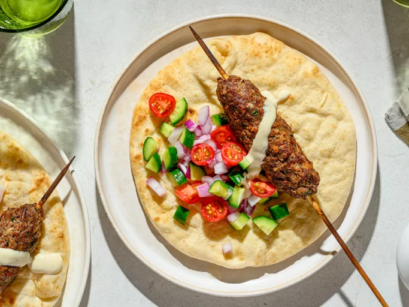

Chef John's Kofta Kebabs

I'm excited to share what is one of my all-time favorite things to grill. This is perfect for those times when you want to take a break from grilling burgers, but you also kinda want a grilled burger, since this is basically a Mediterranean-style meatball on a stick.
There are thousands of different versions of this Middle Eastern-style meatball on a skewer; with different garnishes, and different spellings, but whether you enjoy yours with tahini, or yogurt sauce, or call it kofta, or kofte, or kefta, or kufta, or qofte, this is one my all-time favorite things to grill.
Ingredients
- 1 slice whole grain bread, toasted
- ½ medium yellow onion, diced
- ⅓ cup chopped Italian parsley
- 4 cloves garlic, minced
- 8 ounces ground beef
- 4 ounces ground lamb
- 1 ¼ teaspoons kosher salt
- ½ teaspoon freshly ground black pepper
- ½ teaspoon ground allspice
- ½ teaspoon paprika
- ¼ teaspoon ground cardamom
- ⅛ teaspoon ground nutmeg
- ¼ teaspoon cayenne pepper
- 2 tablespoons water
- 4 bamboo skewers, soaked for at least 1 hour